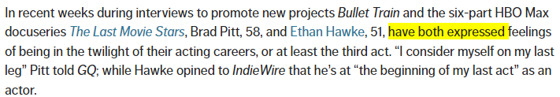
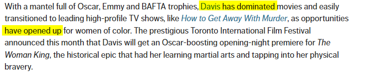
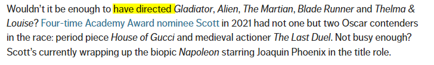
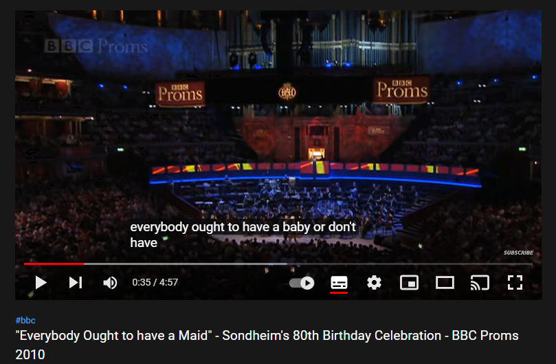

About me,
 Hello Everyone, my name is Maï, I'm so glad to make this project which helps me to improve my
English as well as practice a bit with HTML and CSS.
Hello Everyone, my name is Maï, I'm so glad to make this project which helps me to improve my
English as well as practice a bit with HTML and CSS.
I love to learn and practice, and my passion is a travel and meets new friends. This project will
help me to understand a bit more the grammar. I hope that it helps you also!
Verbs Past participle
In grammar, the past participle of a verb is a form
that is usually the same as the past form and so ends in '-ed'.
A number of verbs have irregular past participles, for example ' break'
(past participle 'broken'), and ' come' (past participle 'come').
Past participles are used to form perfect tenses and the passive voice,
and many of them can be used like an adjective in front of a noun.
URL
Article title pp definición y significado: Diccionario Inglés Collins
Date accessed July 31, 2022
| Present |
Past simple |
Past Participle |
| be |
was/were |
been |
| catch |
caught |
caught |
| have |
had |
had |
| do |
did |
done |
| drive |
drove |
driven |
| fall |
fell |
fallen |
| feel |
felt |
felt |
| speak |
spoke |
spoken |
| sit |
sat |
sat |
| swim |
swam |
swum |
| teach |
taught |
taught |
| wear |
wore |
worn |
AT ON IN
AT: Hours
At ${item}
ON: Days
- On my birthday, on Saturday
- On the weekend, on June 8th
- On Broadway Street, on the beach, on my street
- On the table, on the floor, on the bus, on the plane, on a boat
On ${item2}
IN: Weeks,months, years, decades
- In the 20th century, In the 1986's, In October,
In the third week of March, In the future
Locations
- In the United States, In Miami, In my neighborhood
- In the kitchen, In the house,
the water is in the glass
In the car, In the taxi
Phrasal Verbs
You use phrasal verbs daily while speaking.
A phrasal verb is actually a verb made up of two or more
words: the main verb with an adverb or preposition, or both.
Using these words in combination gives them a meaning
different from that of the individual words used.
This makes them difficult for non-native English
speakers to understand.
examples:
Article title:'We can't afford broadband, so run the baby monitor on 4G'
URL: BBC News
Date accessed:July 30, 2022
Date published:July 20, 2022
works out: solve a problem
turn it on: to activate or cause to flow
cutting back: reduce the amount or quantity of something, especially expenditure.
getting into: start enjoying something, or to become enthusiastic about it
others examples
Break away - to leave something.
Break down - to become very upset.
Break into - to enter a building by force.
Break off - to break a piece from something.
Break out of - to escape from somewhere.
Break through - to pass through a barrier.
Break up - to finish a romantic relationship with someone.
Present perfect
subject + Have / has + pp
subject + hasn't-has not / vaven't-have not
You have worked
You've worked
Have you ever met Paul?
I have not finished my work
I've lost my purse



Article title
Stars and Filmmakers Over 50 Still Excelling in Hollywood
URL
Website title AARP
Date accessed July 31, 2022 / Date published July 26, 2022
Present perfect tense frequently adverbs
The position of adverbs such as; always, never, only, still, just etc.
are placed after the auxiliary verb and before the past participle:
- I've just seen Sarah.
- I have only spoken to her over the phone.
Article title
URL
Advanced Level: Present Perfect Tense
Website title EC English language schools
Date accessed July 31, 2022
- Have you ever been to canada?
- I've never gone alone
- I haven't tried it yet
- I've already purchases a plane ticket
- Have you ever ridden an elephant
Stative Verbs- Non action verbs
Stative
Stative verbs describe a state rather than an action.
They aren't usually used in the present continuous form.
If the foods tastes delicious, most of these customers will return
It smells wonderful at this café
These people look relaxed and happy
Do you see the man in the orange shirt
Article title: Stative verbs
URL
Website title: LearnEnglish
Date accessed: August 8, 2022
Date published: May 14, 2020
Non Action
Some people are tasting the coffee to make sure it's not hot
A man is smelling his food before he takes a bit
A woman is looking at a menu
Article title
URL
Action and non-action verbs - English Grammar Guide
Website title: Insegnanti Inglese a Milano
Date accessed:August 8, 2022
Present Perfect progressive
Subject+ has/have + been + ing
- She has been swimming for 30 minutes
- She has been swimming since 11:00
- Emmily has been stdying for three months
URL
Article title
Bot detection!
Website title:Largest English pronunciation resource on the web. How to pronounce any word in English. YouGlish
Date accessed
August 8, 2022
Past Perfect
Subject + Had + past participle
We had lived in Spain for three years
I'd had met them before the meeting

Article title
Bot detection!
Website title Largest English pronunciation resource on the web.
How to pronounce any word in English. YouGlish
Date accessed August 8, 2022
US police arrest man over murders of Muslim men
BBC News
Date accessed: August 9, 2022
Date published:August 09, 2022
Modals = helping verbs
SUBJECT + Modal + main verb
Modal verbs show possibility, intent, ability, or necessity.
Because they're a type of auxiliary verb (helper verb),
they're used together with the main verb of the sentence.
Common examples include can, should, and must.
What Are Modal Verbs?-Definition & Usage Examples | Grammarly Blog
Date accessed:August 16, 2022. Date published:October 26, 2021
Modals
- can
- could
- may
- might
- should
- had better
- must
- will
- would
Kevin Morby and Rachel Kushner on Life, Death, and Nipple Guards
Website title: Interview Magazine
Date accessed: August 9, 2022
Date published:August 09, 2022
Others examples
- She can return
- Karen could be the team leader/ she couldn't the team leader
- Could I have a coffee?
- We use may when we are not sure about something in present or future
- Jack may be coming to see us tomorrow
- May I borrow the car tomorrow
- You may go now
- I might see you tomorrow
- I should take the dog out
- The students must wear a uniform
- I will never forget you
- I would love a coffee
- I would rather come with you
- I'd rather you came with us.
Phrasal modals
subject + phrasal modal verb + base form of the verb
Phrasal modal verbs contain a simple modal and another verb, and adverb,
or a preposition. There are 5 types of phrasal modal verbs: ability,
permission, probability, advice, and necessity or obligation.
Phrasal Modal Verbs in English--Modals with Two or More Words
Common Ground International Language Services -Date accessed:August 16, 2022-
Date published:April 12, 2021.
- Have to = they have to run
- have got to = We haven't got to pay for the food.
- ought to = We ought to go by plane
- be able to = I will be able to play soccer again
I am able to drive
YouEnglish
Date accessed:August 16, 2022
Maybe and may be
May Be" vs. "Maybe": Learn When Each One Might Be Used
Date accessed: August 16, 2022 - Date published:February 25, 2022
Examples
- maybe it goes to the beginning of the sentence = perhaps
- Maybe someday we can go for skiing in France.
- Maybe he didn't text because he was feeling ill.
- This concert may be the last one from the Vicent Gomez.
- This may be the last time I come.
Advice modals
With friends ej: = She should buy a gift at the mall
conversation = she ought to buy a gift at the mall
strong = she had better buy a gift at the mall
Don't no use ought not, Better: she should not spent to much time at the mall
or she had better not spend too much time at the mall
Adjectives
When more than one adjective comes before a noun, the adjectives are normally
in a particular order. Adjectives which describe opinions or attitudes
(e.g. amazing) usually come first, before more neutral, factual ones (e.g. red):
She was wearing an amazing red coat.
Not: … red amazing coat
English Grammar Today - Cambridge Dictionary
-Date accessed:August 16, 2022

Everybody Ought to have a Maid -Date accessed:August 16, 2022
Order:
number, opinion, size, shape, condition, age, color, pattern, origin, material, purpose.
NOW ON SMALL SLIM COUCHES A CAT PUTS ON MAGIC PIJAMAS
Boring and Bored
Bored is an English adjective used when someone is uninterested or
uninspired by a person or event. Boring an English adjective is used
to describe the object or person that makes us feel uninterested or uninspired.
Bored or Boring? Learn the difference with Examples
Date accessed: August 16, 2022-Date published:July 14, 2020
- The child is bored = this person is no interesting
- The child is boring = It's because he has nothing fun to do
- The rain Is boring
Comparative and superlative
Comparatives and superlatives are special types of adjectives used when
comparing two or more things. The trickiest thing when using comparatives
and superlatives is making sure we are writing them the correct way,
but with a little practice, comparatives and superlatives can quickly be mastered.
Comparative with 2 things
- A is smaller than B
- A is more expensive than B
- A is more farther than B
- big = bigger
- Spicy = spicier
Superlative with 3 things
- C is the most expensive
- C is the farthest
- C is the closest
- C is the lowest
With irregular
- good, better, best
- bad, worse, worst
- far, farther, farthest
Article title
National Geographic Society-Mount Everest
Date accessed:August 16, 2022
Smallest amphibian-Guinness World Records
Date accessed: August 16, 2022
Adjective clauses
An adjective clause (also called relative clause) is a dependent clause
that modifies a noun or pronoun. It tells which one or what kind.
Adjective clauses almost always come right after the nouns they modify.
Describe a noun
- The man who is...
- These people who are sitting..
- That witch = for things
- That who = for people
- Whom = is more formal
- Whose = cuyo, I met a man whose mustache is very long
English Grammar 101 -Date accessed:August 16, 2022
Adjective clauses with prepositions
Main clause -- adjective clause
- That is the teacher -- I spoke yesterday to her
- That is the teacher whom I spoke to yesterday
- Who, Whom, That, whose = people
- Wich, that, whose = things
- When = time, period, year.
English Grammar: Adjective Clauses with Prepositions
- Date accessed:August 16, 2022